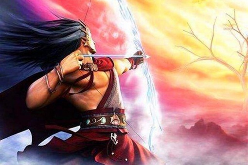

传说古时候，天空曾有十个太阳，他们都是东方天帝的儿子。这十个太阳经常在最东边的东海洗澡。洗完澡后，让他们像小鸟那样栖息在一棵大树上。 当黎明需要晨光来临时，栖息在树梢的太阳便坐着两轮车，穿越天空，照射人间，把光和热洒遍世界的每个角落。 十个太阳每天一换，轮流当值，秩序井然，天地万物一片和谐。人们在大地上生活得非常幸福和睦。可是，这样的日子过长了，这十个太阳就觉得无聊，他们想要一起周游天空，觉得肯定很有趣。于是，十个太阳像十个大火团，在天空中照射着大地，烧死了许多人和动物。这时，有个年轻英俊的英雄叫后羿，他是个神箭手。他看到人们生活在火难中，心中十分不忍，便暗下决心射掉那多余的九个太阳，帮助人们脱离苦海。于是，后羿翻山越岭，来到了东海边，后羿拉开了万斤力弓弩，搭上千斤重利箭，瞄准天上火辣辣的太阳，无一虚发，射掉了九个太阳。中了箭的九个太阳一个接一个地死去。他们的羽毛纷纷落在地上，他们的光和热一点一点地消失了。直到最后剩下一个太阳，他怕极了，就按照后羿的吩咐，老老实实地为大地和万物继续贡献光和热。
